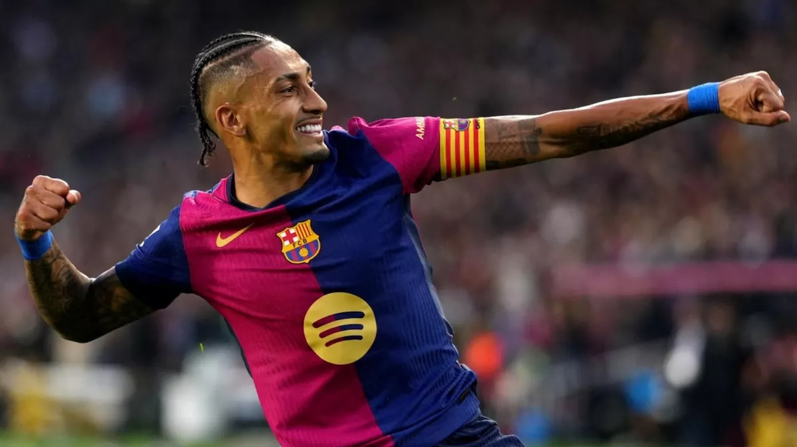
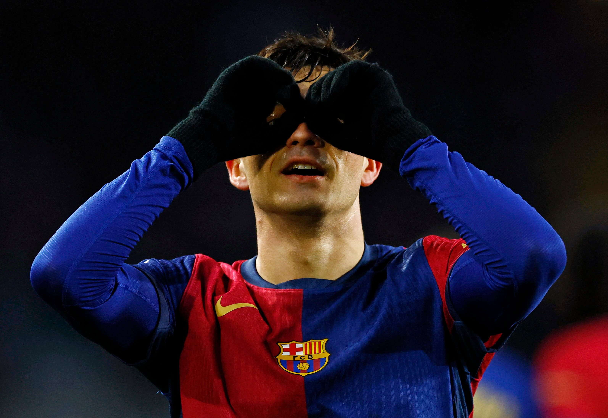
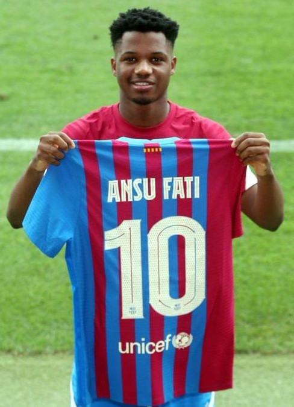
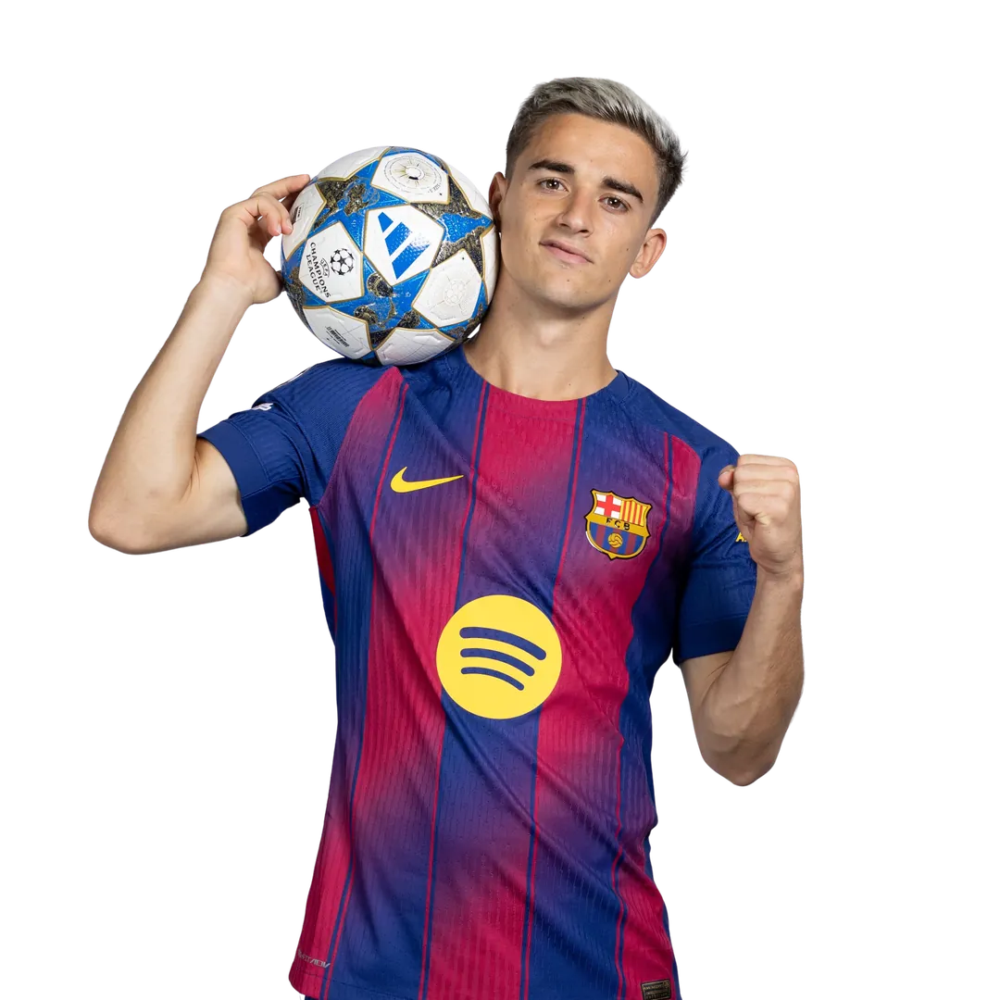
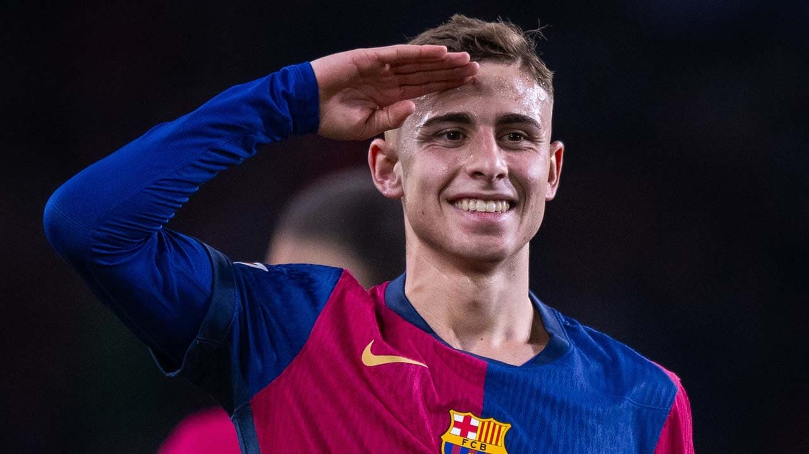
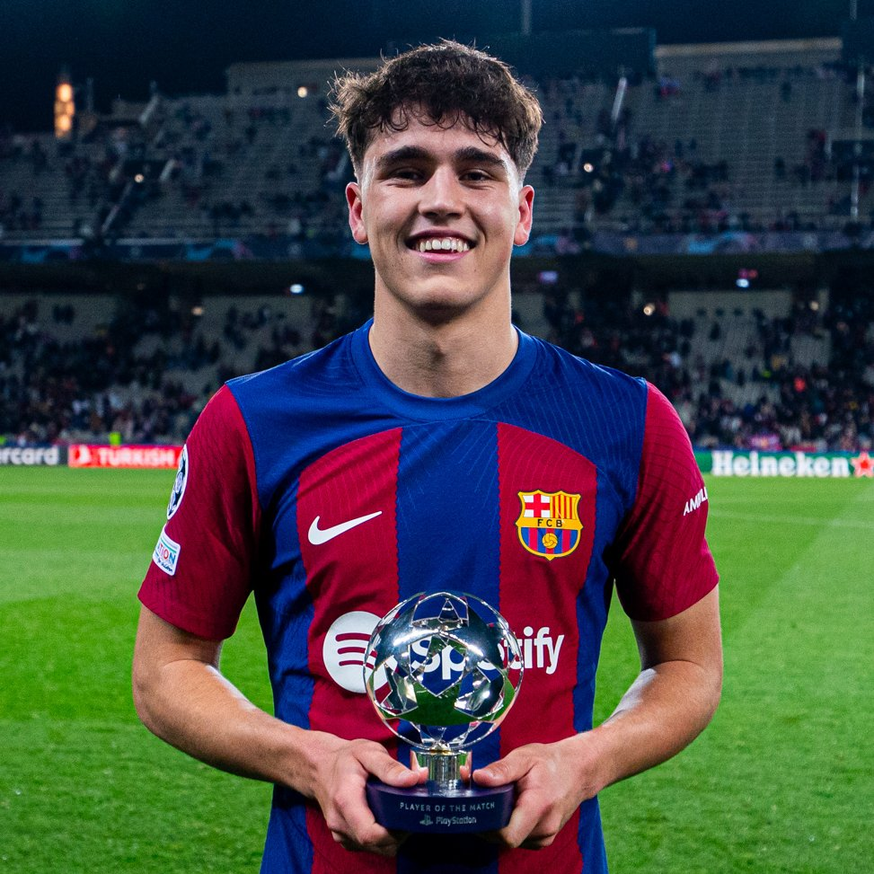
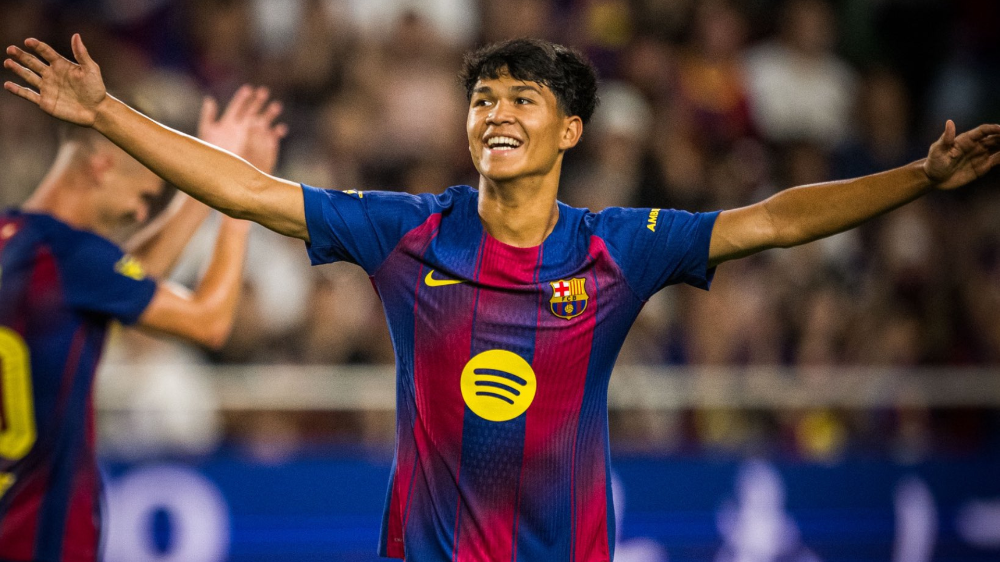
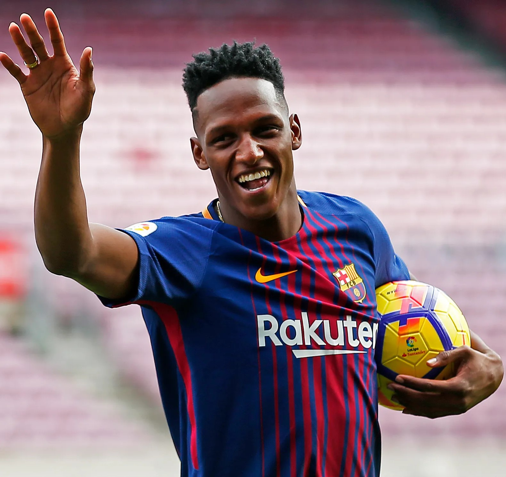

Jugadores Icónicos En Proceso
- Lamine Yamal — La nueva joya del Barça. Talento precoz, goles decisivos y futuro legendario.
- Raphinha — El resiliente brasileño. Técnica, garra y una historia que pasó del rechazo al liderazgo culé. Aún en proceso, pero ya deja huella. 
- Pedri — El heredero del toque. Juventud con visión, entrega y elegancia en cada pase. 
- Ansu Fati — El relámpago precoz que marcó historia con solo 16 años. Hoy sigue brillando en su camino de regreso. 
- Gavi — El gladiador del mediocampo. Trofeos, carácter y corazón culé desde la cantera. 
- Fermín López — De cedido a campeón olímpico. Técnica, humildad y garra en cada jugada. 
- Iñaki Peña — El guardián silencioso. Formado en La Masía, siempre listo para defender el arco con firmeza.
- Pau Cubarsí — El nuevo Puyol. Liderazgo, contundencia y madurez en defensa a los 18 años. 
- Dro Fernández — La joya hispano-filipina de La Masía. Técnica brillante, visión de juego y un futuro que ya empieza a brillar. 
- Yerry Mina
El primer colombiano en el Barça. Llegó con baile, fe y talento… pero solo jugó 7 partidos. Aun así, dejó huella en el corazón culé.
